Microsoft Word. Elemente de interfață
MS Word este unul dintre cele mai cunoscute procesoare de text. Extensii frecvente: .doc, .docx, .docm.
Pornirea aplicației
Start → All Apps → Word (sau cauți „Word” pe bara de activități). Se deschide ecranul de start de unde poți:
- crea un Document necompletat (Blank document);
- crea un document dintr-un șablon;
- deschide un document existent.
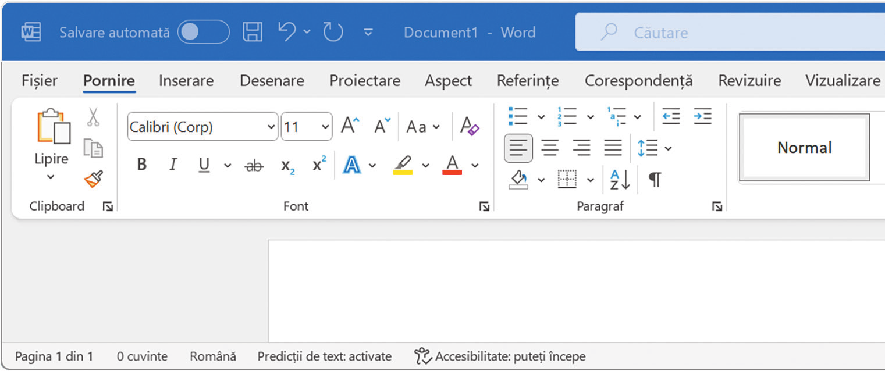
Elementele interfeței
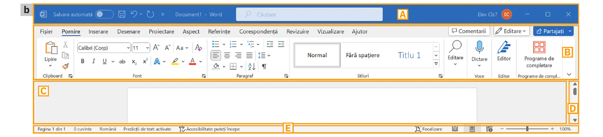
Conține: Bara de acces rapid (Salvare Ctrl+S, Anulare Ctrl+Z, Refacere), numele fișierului, Căutare Microsoft (Alt+G), contul utilizator și butoanele de minimizare/maximizare.
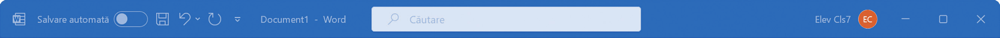
Comenzile grupate pe file. Fiecare filă conține grupuri logice de comenzi (dacă au o săgeată în colțul din dreapta jos, apăsarea deschide mai multe opțiuni) și comenzi individuale. Poți alege să afișezi doar filele sau panglica întreagă. Principalele file, cu grupurile lor de comenzi:

📋 Clipboard
Lipire, Copiere, Decupare și Descriptor de formate (copiază formatarea unui text pe alt text).
🔤 Font
Tip și dimensiune literă, Aldin/Cursiv/Subliniat, culoare text și evidențiere, indice/exponent — formatare la nivel de caracter.
¶ Paragraf
Marcatori, numerotare, aliniere, indentare, spațiere, umbrire și borduri — formatare la nivel de paragraf.
🎨 Stiluri
Seturi predefinite de formatare (Titlu, Normal etc.) pe care le aplici dintr-un click pentru un aspect unitar.
🔍 Editare
Găsire și înlocuire rapidă a unui text, selectare a elementelor din document.
🎤 Voce
Dictare — scrii cu vocea în locul tastaturii.
✒️ Editor
Verificare ortografică/gramaticală și sugestii de îmbunătățire a stilului de scriere.
➕ Programe de completare
Extensii/suplimente instalate care adaugă funcții noi lui Word.
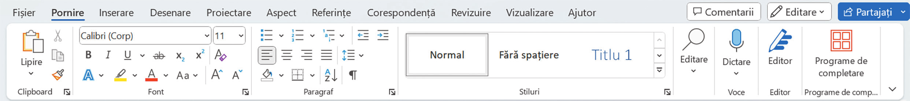
📄 Pagini
Copertă, pagină necompletată, sfârșit de pagină.
▦ Tabele
Inserează un tabel alegând vizual numărul de rânduri și coloane.
🖼️ Ilustrații
Imagini (dispozitiv, bancă de imagini, online), Forme, Pictograme, SmartArt, Diagramă, Captură de ecran.
🎬 Media
Videoclipuri online inserate direct în document.
🔗 Linkuri / Comentarii
Hiperlinkuri către pagini web sau alte documente; adăugare comentarii.
📑 Antet și subsol
Antet, subsol, număr de pagină — se repetă pe fiecare pagină.
🅰️ Text
Casetă text, litere capitulare, obiecte, dată și oră.
Ω Simboluri
Ecuații matematice și simboluri speciale (©, €, ≠ etc.).
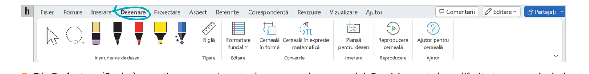
✏️ Instrumente de desen
Diverse markere/creioane colorate și instrument de selecție/laso pentru desen liber.
📏 Riglă / Tipare
Afișează o riglă virtuală pe ecran, utilă pentru linii drepte desenate manual.
🖌️ Editare
Formatare fundal, radieră pentru cerneală.
🔄 Conversie
Cerneală în formă și Cerneală în expresie matematică — transformă desenul de mână în forme/ecuații curate.
🖼️ Inserare
Planșă pentru desen — o zonă dedicată desenului în document.
▶️ Reproducere / Ajutor
Redă pas cu pas cum a fost desenat un element; ajutor pentru instrumentele de cerneală.
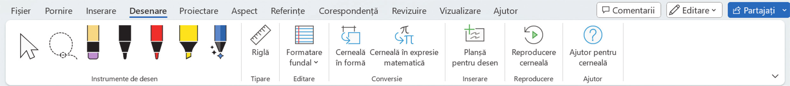
🎭 Teme
Seturi de culori, fonturi și efecte deja armonizate, aplicate documentului dintr-un click.
📐 Formatare document
Stiluri de titluri gata făcute, Culori, Fonturi, Efecte, Spațiere paragraf.
🖍️ Fundal pagină
Filigran/Inscripționare, Culoare pagină, Borduri de pagină.
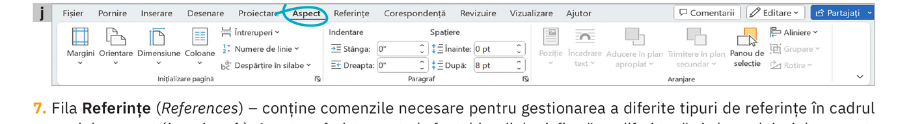
📄 Inițializare pagină
Margini, Orientare (Portret/Vedere), Dimensiune, Coloane, Întreruperi, Numere de linie, Despărțire în silabe.
¶ Paragraf
Indentare stânga/dreapta și spațiere înainte/după paragraf — control fin, în puncte/cm exacte.
📍 Aranjare
Poziție, Încadrare text, Aducere/Trimitere în plan, Panou de selecție, Aliniere, Grupare, Rotire — pentru obiecte (imagini, forme) față de text.
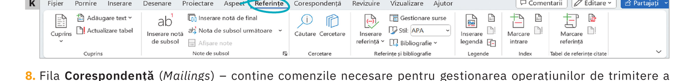
📚 Cuprins
Crează și actualizează automat un cuprins bazat pe titlurile documentului.
🔤 Note de subsol
Inserare notă de subsol/de final, afișare note.
🔎 Cercetare
Căutare și cercetare de informații direct din Word.
📖 Referințe și bibliografie
Inserare referință, alegere stil de citare (ex. APA), Bibliografie, Gestionare surse.
🏷️ Legende / Index
Marcare intrare de index, inserare legendă pentru imagini/tabele.
📇 Tabel de referințe citate
Pentru lucrări juridice/academice — marchează și listează referințele citate.
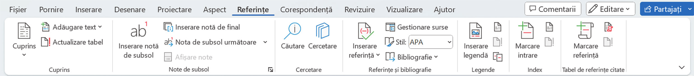
✉️ Creare
Plicuri și Etichete — fiecare cu adresa proprie.
🔀 Pornire Îmbinare corespondență
Alege tipul de document și lista de destinatari pentru trimiteri multiple.
🖊️ Scriere și inserare câmpuri
Bloc adresă, linie de salut, câmpuri de îmbinare personalizate.
👁️ Examinare rezultate
Previzualizează scrisorile înainte de trimitere/tipărire, caută destinatari, verifică erori.
✅ Terminare
Finalizează și îmbină documentele/emailurile pentru toți destinatarii.
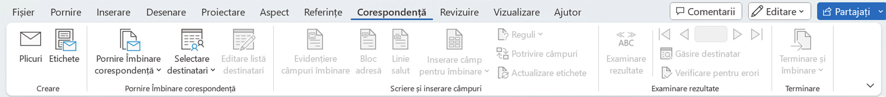
✔️ Verificare
Corectare ortografică și gramaticală, Lexicon (sinonime), Contor de cuvinte.
🔊 Vorbire
Citire cu voce tare a documentului.
♿ Accesibilitate
Verifică dacă documentul e ușor de folosit pentru toți utilizatorii.
🌐 Limbă / Comentarii
Setează limba textului; adaugă/gestionează comentarii.
📝 Urmărire / Modificări
Track Changes — înregistrează modificările; le poți accepta sau respinge una câte una.
⚖️ Comparare
Compară două versiuni ale unui document.
🖋️ Protejare / Cerneală
Restricționează editarea; ascunde adnotările de cerneală.
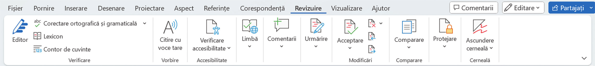
👁️ Vizualizări
Mod citire, Aspect pagină imprimată, Aspect Web, Schiță, Ciornă.
🎯 Imersiv
Focalizare (elimină distragerile) și Immersive Reader (citire asistată).
📖 Deplasarea paginilor
Derulare Verticală sau Față în față (ca o carte).
🖥️ Afișare
Riglă, Linii de grilă, Panou de navigare — ajută la poziționare și la navigarea rapidă în document.
🔎 Zoom
Mărește/micșorează afișarea documentului; 100%, O pagină, Lățime pagină etc.
🗔 Fereastră
Fereastră nouă, Aranjați tot, Comutare fereastră, Scindare — lucrezi cu mai multe ferestre.
⚙️ Macrocomenzi
Automatizează acțiuni repetitive înregistrate ca o secvență de pași.
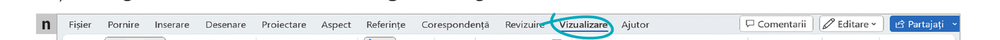
❓ Ajutor
Comenzi care permit căutarea de informații de ajutor pentru utilizarea programului — util când nu știi cum se face ceva în Word.
Zona de lucru în care editezi efectiv documentul.
Bară verticală/orizontală care mută aria de afișare (sus/jos, stânga/dreapta).
În partea de jos: număr pagină, număr de cuvinte, erori ortografice, limbă, predicție text, accesibilitate, moduri de vizualizare și zoom.
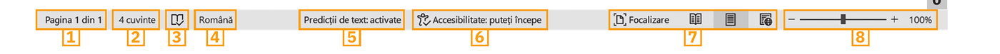